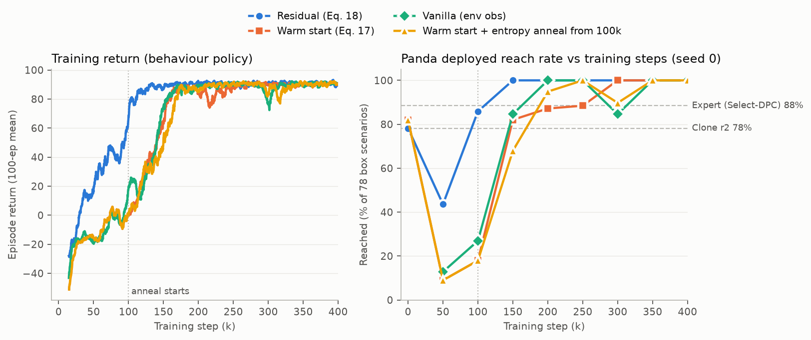
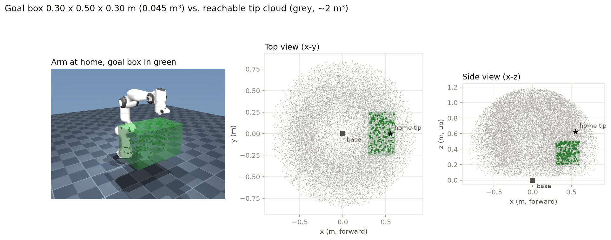
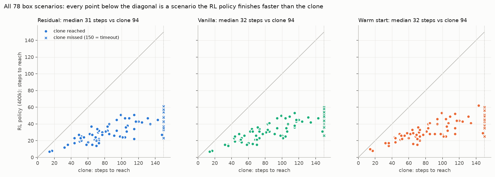

18. Panda RL on a goal box — the clone works once the task is local, and RL makes it optional¶
Decision¶
Narrowing PandaReach-v0's goals to a 0.30 × 0.50 × 0.30 m box in front of
the base got the full pipeline (Select-DPC expert → behavioral clone → RL) to
run end to end on the Panda for the first time. The DAgger clone reaches
61/78 on the frozen box scenarios (the full workspace clone reached
9/78), and every RL arm reaches 78/78 at 400k SAC steps. The Select-DPC
expert scores 69/78 on the same box. All four arms reach the same final
score, so the clone's only measurable contribution is sample efficiency:
the residual reaches 78/78 at 150k, vanilla SAC (no clone) at 200k,
warm start at 300k, and the cold control at 350k. Warm start, the
architecture that won on Reacher (16), collapses
from 64/78 to 7/78 within the first 50k steps and finishes behind
vanilla. Single seed throughout.

Motivation¶
Journey 15 left the Panda with a good expert that
couldn't be deployed. Select-DPC reaches 70/78 across the whole workspace,
but each step solves a QP over a ~180,000-column bank, which takes 3.2 s
against a 20 ms control period. On the unicycle and on Reacher, the next step
was to clone the expert into an MLP and train an RL correction on top. On the
Panda, the clone failed. Seven attempts (output reparameterization, DAgger,
wider data spread, regularization, short and long rollout losses) all ended
between 2 and 9 of 78 (postmortem: panda-clone-postmortem.html;
figures panda_why_clone_fails.png, panda_clone_dataset_coverage.png).
Each fix improved the quantity it targeted, and the long rollout loss cut
teacher-forced drift 16×, yet reach rate stayed in that band.
The mechanism was the same one journey 15 found for the expert's data bank:
coverage. Measured in the clone's own feature space, the Panda's effective
dimension is 5.1 ± 0.5, against Reacher's 3.3. That puts the dimension in the
exponent of the collection cost. Halving the distance to the nearest training
state costs about 10× more placements on Reacher and about 33× on the Panda
(panda_vs_reacher_coverage.png, scripts/plot_coverage_scaling.py). The
30,000-row training set was really 200 thin threads, and only 1% of states
had a training neighbour close enough for the expert's decision to transfer.
Matching Reacher's data density over the full workspace would have taken
about 180 worker-hours of solver time.
Two ways forward were possible: buy more data across the whole workspace, or make the region the data has to cover smaller. A clone is useful when the expert's behaviour can be learned on the states the clone will visit. The reachable tip cloud is ~2 m³ and wraps all the way around the base, and most of it is irrelevant to a tabletop reach. Restricting goals to a box cuts the volume of goal space ~45× while leaving the hard parts in place: a 7-DoF arm, the hidden self-motion manifold, and the delta-target plant. That makes it a test of whether the pipeline works on the Panda at all, at a coverage budget the project could actually afford. It does not claim to solve the full-workspace task. This entry runs that test, then asks the question journeys 09, 13 and 16 asked of the other systems: once RL is in the loop, what does the clone buy?
Experimental setup¶
Task: the goal box¶

- Box
x ∈ [0.30, 0.60],y ∈ [−0.25, 0.25],z ∈ [0.20, 0.50]m (0.045 m³ against a ~2 m³ reachable cloud). It sits in front of the base and just below thehometip, as in a tabletop workcell. - Reachability is preserved by rejection, not by box sampling.
PandaReachEnv(goal_box=...)keeps samplingsample_config(FK of a random valid configuration) until the tip lands inside the box (~4% acceptance). Every goal is therefore still FK of a collision-free configuration, so CLAUDE.md's "every goal is reachable" guarantee survives. A box sampled directly in Cartesian space would not guarantee that. - Only goals are restricted. Start configurations,
delta_max = 0.2,goal_tolerance = 0.05m,max_steps = 150, reward,Q, andRare unchanged. - Frozen evaluation set
data/panda_scenarios_box_v1.npz: 78 scenarios, generated byscripts/make_panda_scenarios.py --goal-box 0.3 0.6 -0.25 0.25 0.2 0.5. The box is stored in the file, so a boxed set records what it is. Every number in this entry is greedy, full-horizon, on these 78.
Clone: three DAgger rounds inside the box¶
Collection uses scripts/gen_panda_clone_data.py with the Select-DPC labeller
picked in the Phase 2 gate (scripts/gate_panda_labeler.py). Episodes run the
full 150 steps (station-keeping rows included), and their (q0, goal) pairs
are disjoint from the frozen 78.
| Round | Driver | Episodes | Rows | Driver reached | Clone trained on r0..rN | Box reach |
|---|---|---|---|---|---|---|
| r0 | expert | 100 | 15,000 | 94/100 | panda_clone_box_r0 |
46/78 |
| r1 | clone (DAgger) | 100 | 15,000 | 62/100 | panda_clone_box_r1 |
49/78 |
| r2 | clone (DAgger) | 1,000 | 150,000 | 683/1000 | panda_clone_box_r2 |
61/78 |
panda_clone_box_r2_squash |
64/78 |
- Features: the 99-D window from
panda/clone_features.py:T_ini = 5rows of applied ctrl andy = [q; tip], the current[q; tip],tip − goal, and buffer validity. - Target: the delta
q_des − q. This is the reparameterization that helped most in the full-workspace attempts. - MLP 256×256, aggregated over all rounds (DAgger), episode-wise validation split.
_squashis the same data trained with atanhhead, which SB3's SAC actor needs so the clone's weights can load into it exactly (rl/sb3.py::init_actor_from_clone). The warm arm uses it. The residual arm uses the plainbox_r2clone.
Round r0 uses the exact recipe that gave 2/78 over the full workspace (100 expert episodes, 15,000 rows). Inside the box, the same recipe gives 46/78. This compares two tasks, each scored on its own 78 scenarios, so it is not a paired result. But all of the jump comes from the task restriction, before any further data or method change.
RL arms¶
All arms use SAC from scripts/train_panda_rl.py: lr 3e-4, net_arch [256, 256],
otherwise SB3 defaults, 400k env steps, seed 0, and a checkpoint every 50k.
Goals are drawn from the same box (panda/rl_env.py::GOAL_BOX).
| Arm | Env | Observation | Action → delta | Actor init |
|---|---|---|---|---|
| residual (Eq. 18) | PandaResidualEnv |
env obs (24, min-max normalized) + clone delta / δ_max (7) |
clip(u_clone + δ_max·a, ±δ_max) |
zero (zero_init_actor), so step 0 = clone |
| warm (Eq. 17) | PandaWindowEnv |
clone's raw 99-D window | δ_max·a |
squash clone's weights, log σ = log 0.1 |
| warm + anneal | PandaWindowEnv |
same | same | same, plus target entropy annealed −7 → −21 from 100k (17) |
| cold | PandaWindowEnv |
same | same | random. Differs from warm only in the init. |
| vanilla | PandaVanillaEnv |
env's own 24-D obs | δ_max·a |
random, no clone anywhere |
Equation numbers follow Jia & Bajaj (arXiv:2510.03354), as in journey 16.
Window is the clone's (u_ini, y_ini) buffer, and it slides with (applied
ctrl, pre-step y), the same labelling the clone was trained under. With a
zero residual, the residual arm runs exactly the clone's closed loop.
RLPolicy drives that same Window at evaluation, so training and scoring
can't drift apart.
Evaluation¶
Each 50k checkpoint is scored greedily on the frozen 78 through
panda/eval.py::run_scenarios, the same harness as the clone rows
(data/panda_rl_sweep.csv; finals in data/panda_results.csv). Reach is
‖tip − goal‖ < 0.05 m at any step. Steps-to-reach and effort (Σ‖δ‖) are
taken from the same episodes.
Results¶
Reach rate per checkpoint (of 78)¶
| Step | residual | warm | warm + anneal | cold | vanilla |
|---|---|---|---|---|---|
| 0 | 61 (clone) | 64 (clone) | 64 (clone) | — | — |
| 50k | 34 | 7 | 7 | 4 | 10 |
| 100k | 67 | 14 | 14 | 16 | 21 |
| 150k | 78 | 64 | 53 | 20 | 66 |
| 200k | 78 | 68 | 74 | 46 | 78 |
| 250k | 78 | 69 | 78 | 73 | 78 |
| 300k | 78 | 78 | 70 | 77 | 66 |
| 350k | 78 | 78 | 78 | 78 | 78 |
| 400k | 78 | 78 | 78 | 78 | 78 |
- The residual is the only arm that never falls far below its prior. It dips to 34 at 50k, recovers past the clone by 100k, and from 150k on it holds 78/78 at every checkpoint. It also has the earliest stable return in the left panel by roughly 50k steps.
- Warm start loses the clone almost immediately. 64 → 7 by 50k, then it tracks vanilla's curve rather than leading it. This is journey 16's mechanism (P3: the randomly initialized critic's gradients overwrite the actor's prior). On Reacher, the warm arm recovered fast enough to stay ahead of vanilla. On the Panda it doesn't: warm reaches 78/78 100k steps after vanilla.
- Entropy annealing didn't change that. Its 50k and 100k checkpoints are identical to warm's (annealing starts at 100k), and afterwards the two curves trade places within a few scenarios. Annealing made no measurable difference here, consistent with journey 17's "net wash".
- The cold control is the slowest, 350k. It shares warm's 99-D window observation, while vanilla uses the env's 24-D one, and vanilla is 150k faster. So on this env the windowed observation costs more than the clone's weights recover.
- Non-monotone checkpoints are threshold churn, not regressions. Vanilla drops 78 → 66 at 300k and recovers by 350k. Warm + anneal drops 78 → 70. The median final distance stays at 0.044–0.047 m throughout, just inside the 0.05 m tolerance, which is the parked-near-the-boundary pattern from journey 17.
What RL changes about the trajectories¶

| Method | Reached | Median steps (reached) | Mean effort Σ‖δ‖ |
|---|---|---|---|
| Select-DPC expert | 69 | — | — |
clone box_r2 |
61 | 77 | 2.97 |
clone box_r2_squash |
64 | 76.5 | 3.32 |
| residual 400k | 78 | 31 | 6.67 |
| warm 400k | 78 | 31.5 | 5.79 |
| warm + anneal 400k | 78 | 34 | 6.87 |
| cold 400k | 78 | 34 | 5.92 |
| vanilla 400k | 78 | 32 | 5.68 |
Every RL policy finishes every scenario faster than the clone. Every point
in the figure lies below the diagonal, and the 17 scenarios the clone misses
take 25–60 steps under RL. The RL policies roughly double the clone's effort
to do it. The reward's R = 1e-2·I₇ prices effort low enough that arriving
2.5× sooner pays for it. Of the arms, the residual spends the most effort and
vanilla the least: the residual keeps the clone's action and adds a
correction on top, so it moves more joint angle per step. Per-scenario paths
for four representative cases are in panda_rl_traj_s{10,49,54,68}.png,
generated by scripts/plot_panda_rl_trajectories.py, and
videos/panda_rl_vs_clone.mp4 shows clone / residual / vanilla / warm side
by side.
Considered¶
- Buy full-workspace coverage instead of shrinking the task. The measured coverage exponent puts this at about 180 worker-hours of solver time for Reacher-level density, and even then the clone would only be the starting point for RL. Not run. The box answers the pipeline question at about 1% of the cost.
- Skip the clone and run RL on the full workspace. This is the honest next comparison, and it isn't settled here. The box results suggest vanilla would get there too, but they don't show it.
- A smaller or bigger box. A smaller box would make the clone look better
and teach less. The chosen box is the size of a tabletop workcell, and the
rejection sampler's ~4% acceptance rate keeps resets cheap. A box much
smaller than this one would need IK-checked sampling (the
ponytail:comment inpanda/env.py). - More warm-start remedies. Journey 16 already measured both pre-registered remedies (freezing the actor for 10k steps while the critic warms up, and critic pretraining on MC returns) and found that each cost more than the collapse it was meant to prevent. Entropy annealing was the one remaining cheap lever, and it was run.
Outcome¶
PandaReachEnv(goal_box=...)with rejection sampling.panda/scenarios.generateandmake_panda_scenarios.py --goal-boxrecord the box in the frozen file. New frozen setdata/panda_scenarios_box_v1.npz.panda/clone_data.py,panda/clone_features.py,scripts/gen_panda_clone_data.py,scripts/train_panda_clone.py,scripts/validate_panda_clone.py: the Panda clone pipeline, with DAgger rounds and a--squashhead for warm start.ClonePredictor.statsnow carries the clone's target convention, so a delta clone can't silently be read as an absolute one.panda/rl_env.py(residual / window / vanilla envs, sharedWindow,RLPolicy) andscripts/train_panda_rl.py --arm {residual,warm,cold,vanilla}.- Figures:
panda_goal_box.png,panda_rl_curves.png,panda_rl_vs_clone_steps.png,panda_rl_vs_clone.png,panda_rl_traj_s*.png. - Reporting convention: because every arm saturates at 78/78, Panda RL arms are compared on reach at a fixed budget (50k–200k), not on the final score.
Caveats¶
- Single seed, single run per arm. The ordering residual < vanilla < warm < cold is based on one seed. Gaps of 50k steps between neighbours are within what a second seed could reorder; the residual's 150k lead over cold is the most robust gap.
- Checkpoint granularity is 50k. "Reaches 78/78 at 150k" means at the first scored checkpoint where it does. The warm arm's collapse is visible only as 64 → 7 at 50k. Its onset wasn't measured on the Panda (journey 16 measured it at 4,000 steps on Reacher).
- The expert's 69/78 on the box is a recorded constant
(
plot_panda_rl_curves.py --expert), not a row inpanda_results.csv. The other per-scenario evals are in the CSVs. The expert's 94/100 in the r0 table is on training episodes, not the frozen 78. - The box changes the task, not just the data. "61/78 vs 9/78" compares two goal distributions, each with its own frozen set. It shows that the pipeline works once the task is local, not that the clone improved on the original task.
- The cold arm is missing from
panda_rl_curves.png. Its numbers are in the table above and indata/panda_rl_sweep.csv.